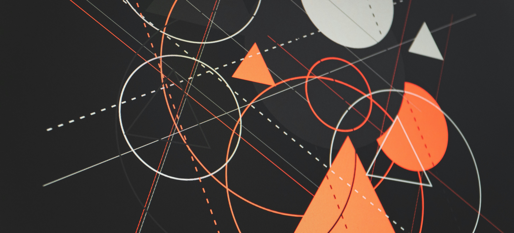

WHODAS 2.0 und WHO Digital Health

WHO-Klassifizierung digitaler Interventionen, Dienste & Anwendungen im Gesundheitswesen
Standardisierung schlägt Improvisation.
Die WHO-Klassifizierung etabliert ein bewährtes Ordnungssystem für digitale Gesundheitslösungen – von der Bedarfsanalyse über Funktionsdefinition bis zur Systemzuordnung.
Das Ergebnis: vergleichbare Investitionen, interoperable Architekturen und transparente Portfolios.
Die WHO beschreibt digitale Gesundheit als systematische Nutzung von IKT, Informatik und Daten, um Entscheidungen von Personen, Gesundheitspersonal und Gesundheitssystemen zu unterstützen – mit dem Ziel, Resilienz zu stärken sowie Gesundheit und Wohlbefinden zu verbessern.
Sie funktioniert wie ein Periodensystem für Digital Health: präzise Einordnung, verlässliche Vergleichbarkeit, strategische Steuerung.
Management Summary
Betriebsmodell: Standardisieren · Zuordnen · SteuernWas das Dokument leistet
-
Für Geschäftsführung und IT-Leitung
Architekturentscheidungen werden nachvollziehbar. Jedes neue System lässt sich eindeutig einer DISAH-Kategorie* zuordnen – das erzwingt frühe Klärung von Schnittstellen und Standards.
* DISAH=Digital Interventions, Services and Applications in Health -
Für Projektleitung und Fachbereiche
Anforderungen werden in einer gemeinsamen Sprache formuliert. „Wir brauchen Digitalisierung" wird zu „Wir implementieren Digital Health Intervention X in System Y, um Health System Challenge Z zu lösen."
-
Für Geschäftsführung und Träger
Das Investitionsportfolio wird steuerbar. Sie sehen auf einen Blick:
- Welche Versorgungslücken sind digital adressiert?
- Wo besteht Investitionsbedarf?
- Wo gibt es Redundanzen?
Warum das „klassisch“ funktioniert
Klassische Digitalisierungsprojekte starten bei der Technologie („Wir brauchen eine App").
Die WHO-Klassifizierung startet beim Problem („Wir haben 30% No-Shows in der Nachsorge") und leitet daraus systematisch ab: DHI (Termin-Erinnerung) → DISAH (Client-Communication-System, Kategorie A) → Interoperabilität (Anbindung an Terminverwaltung, Kategorie B).
Das Ergebnis: Projekte, die tatsächlich lösen, wofür sie gebaut wurden.
Die WHO Architektur in 5 Kategorien
Die fünf DISAH-Kategorien strukturieren digitale Gesundheitslösungen nach ihrer Funktion im Gesamtsystem.
Jede neue Anwendung, jeder Service lässt sich eindeutig zuordnen – das ist die Voraussetzung für interoperable Architekturen und langfristig tragfähige Investitionen.
| Kategorie | Bezeichnung | Kernfunktion | Typische Systeme | Architektur-Hinweis |
|---|---|---|---|---|
| A | Point of Service | Direkte Versorgung am Behandlungsort: Datenzugriff, -erfassung und -aktualisierung in der unmittelbaren Patient:innen-Interaktion | • Elektronische Patientenakten • Klinische Entscheidungsunterstützung • Telemedizin-Plattformen • Mobile Diagnostik-Apps • Patient-Communication-Systems. |
Schnittstellenkritisch: PoS-Systeme benötigen Echtzeit-Zugriff auf Register (Kat. C) und Datenverwaltung (Kat. D). Ohne saubere HL7/FHIR-Integration entstehen Datensilos. |
| B | Provider Management | Backoffice und Steuerung: Betriebssysteme für Anbieter-Organisation, Personal, Finanzen, Logistik | • Krankenhaus-Informationssysteme (KIS) • Abrechnungssysteme • Personal- und Dienstplanung • Materialwirtschaft • Qualitätsmanagement-Systeme |
Oft unterschätzt: Kategorie B ist die Grundlage für funktionierende PoS-Systeme. Ohne solide Provider-Management-Architektur können digitale Interventionen nicht skalieren. |
| C | Register & Verzeichnisse | Master Data Management: Referenzsysteme für Identitäten, Einrichtungen, Produkte, Terminologien | • Master Patient Index (MPI) • Einrichtungsverzeichnisse • Impfinformationssysteme • Medikamenten-/Produkt-Kataloge • Terminologie-Server (SNOMED, ICD) |
Die Unterschätzte: Ohne saubere Register sind alle anderen Kategorien gefährdet. Doppelte Patient:innen-IDs, inkonsistente Terminologie und fehlende Provider-Verzeichnisse produzieren Datenqualitätsprobleme in der gesamten Architektur. |
| D | Datenverwaltung | Analytics, Interoperabilität, Data Warehousing: Systeme für Datenanalyse, -austausch und Wissensmanagement | • Data Warehouses / Data Lakes • BI- und Analytics-Plattformen • Interoperabilitäts-Gateways • FHIR-Server • GIS-Systeme |
Interoperabilitäts-Hub: Kategorie D ist der Klebstoff zwischen allen anderen Kategorien. Hier wird entschieden, ob Ihre Architektur vendor lock-in produziert oder echte Datenhoheit ermöglicht. |
| E | Surveillance & Response | Public Health und Notfall: Überwachungs- und Reaktionssysteme für Bevölkerungsgesundheit und Krisen | • Syndromische Überwachung • Meldesysteme (IfSG-konform) • Outbreak-Management • Notfallkoordinationssysteme • Disease Registries |
Compliance-relevant: Kategorie E unterliegt häufig besonderen regulatorischen Anforderungen (Meldepflichten, Daten-Souveränität). Architektur muss Echtzeitfähigkeit und Ausfallsicherheit gewährleisten. |
Praxis Checkliste
Phase 1: Problem definieren
✅ Health System Challenge präzisieren
❌ Falsch: „Wir wollen die Digitalisierung im Entlassmanagement verbessern“
✅ Richtig: „30% der Patient:innen mit Herzinsuffizienz werden innerhalb von 30 Tagen rehospitalisiert, weil die Nachsorge nicht greift.“
- Wer ist betroffen? (Patientengruppe, Prozess, Versorgungsebene)
- Was ist die Konsequenz? (Rehospitalisierung, Therapieabbruch, vermeidbare Komplikation)
- Was ist die vermutete Ursache? (Informationslücke, Koordinationsproblem, fehlende Adhärenz)
Phase 2: Digitale Intervention definieren
✅ Digital Health Intervention eindeutig benennen
Die WHO-Klassifizierung definiert 82 standardisierte Digital Health Interventions. Nutzen Sie diese – nicht Ihre eigenen Begriffe.
- ❌ „Digitale Nachsorge-App“
- ✅ Kombination aus: Client education, Client reminders, Health worker decision support, Health record transmission
Phase 3: Systemarchitektur klären
✅ DISAH-Kategorien zuordnen
Wenn Sie mehrere DISAH-Kategorien benötigen, ist Interoperabilität projektkritisch – das muss in Budget und Zeitplan abgebildet sein.
Phase 4: Interoperabilität früh klären
✅ Interoperabilitäts-Anforderungen aus DISAH ableiten
- Welche Daten müssen zwischen Kategorien ausgetauscht werden?
- Welche Standards sind relevant? (FHIR, HL7 CDA, DICOM, IHE-Profile)
- Welche Terminologien müssen gemapped werden? (ICD-10-GM, OPS, SNOMED CT, LOINC)
- Gibt es Master-Data-Management in Kategorie C?
Red Flag: Wenn Ihr Projekt keine Kategorie C benötigt, ist Ihre Architektur vermutlich fehlerhaft.
Phase 5: Portfolio & Governance
✅ Integration in bestehendes Portfolio dokumentieren
- Welche Systeme existieren bereits in denselben DISAH-Kategorien?
- Gibt es Überschneidungen bei den Digital Health Interventionen?
- Wer ist Systemeigner für jede DISAH-Kategorie?
Phase 6: Dokumentation
✅ Projekt im WHO-Format dokumentieren
- Health System Challenges: Welches Problem wird gelöst?
- Digital Health Intervention: Welche Funktionen werden implementiert?
- DISAH: In welchen Systemen sind sie verankert?
- Interoperabilitätsstandards: Welche Standards werden genutzt?
- Outcomes: Welche Kennzahlen werden gemessen?
Zusammenfassung: Die 6 kritischen Fehler vermeiden!
| Fehler | Konsequenz | Richtig machen |
|---|---|---|
| 1. Unklare Problemdefinition | Projektziele schwammig | ✅ HSC präzise formulieren |
| 2. Technologie vor Funktion | Vendor-getriebene Lösung | ✅ Digital Health Intervention definieren |
| 3. Fehlende Architektur-Klarheit | Späte Erkenntnis über Schnittstellen | ✅ DISAH-Zuordnung früh vornehmen |
| 4. Interoperabilität nachträglich | Explodierende Kosten | ✅ Standards in Planungsphase klären |
| 5. Bestehende Systeme ignoriert | Redundante Investitionen | ✅ Portfolio-Check: Integration statt Neubau |
| 6. Undokumentierte Projekte | Wissen geht verloren | ✅ WHO-Format nutzen |
Operate like it’s proven: Die WHO-Klassifizierung ist ein operatives Werkzeug – nutzen Sie es konsequent.
|
Originaldokument (EN)
Classification of digital interventions, services and applications in health. 2nd Edition, 24 October 2023, WHO Team Digital Health and Innovation (DHI). PDF öffnen / herunterladen |
WHO Digital Health in der Praxis nutzen?
Ich zeige Ihnen, wie Sie die Standards für Ihre Digital Health Strategie einsetzen. |
Thomas Bade hat alle Inhalte inhaltlich geprüft, fachlich bewertet und freigegeben.
WHODAS 2.0 – Standardisiertes Assessment auf Basis der ICF
Die WHO Disability Assessment Schedule (WHODAS 2.0) ist das von der Weltgesundheitsorganisation entwickelte Standardinstrument zur Messung von Gesundheit, Funktionsfähigkeit und Behinderung. Es basiert unmittelbar auf der International Classification of Functioning, Disability and Health (ICF) und überführt deren theoretisches Modell in ein international validiertes Assessmentverfahren.
Während die ICF ein gemeinsames Klassifikationssystem für Körperfunktionen, Aktivitäten, Teilhabe und Umweltfaktoren beschreibt, ermöglicht WHODAS 2.0 die standardisierte Erfassung dieser Bereiche in Forschung, Versorgung und Evaluation. Dadurch werden funktionelle Einschränkungen unabhängig von einzelnen Diagnosen international vergleichbar.
Aufbau und Versionen
Das Manual „Measuring Health and Disability: Manual for WHO Disability Assessment Schedule (WHODAS 2.0)“ unterscheidet mehrere Formate, die je nach Erhebungskontext kombiniert werden:
| Format | Umfang | Typischer Einsatz |
|---|---|---|
| 36-Item-Vollversion | 36 Fragen, alle 6 Domänen | Forschung, differenzierte klinische Erhebung |
| 12-Item-Kurzversion | 12 Fragen (Screening-Set) | Verlaufsmessung, Routinebetrieb, Zeitrestriktion |
| Selbstausfüller-Version | schriftlich, eigenständig | Papier- oder Online-Erhebung ohne Interviewer |
| Interviewer-administrierte Version | strukturiertes Interview | Face-to-Face oder Telefon, mit Flashcards |
| Proxy-Version | Fremdeinschätzung | Angehörige/Bezugspersonen, wenn Selbstauskunft nicht möglich ist |
Die sechs WHODAS-Domänen
- D1 Kognition – Verstehen und Kommunikation
- D2 Mobilität – Bewegen und Fortbewegen
- D3 Selbstversorgung – Körperpflege, Anziehen, Essen, Alleinsein
- D4 Umgang mit anderen Menschen – zwischenmenschliche Interaktion
- D5 Alltagsaktivitäten – Haushalt, Arbeit und Schule
- D6 Teilhabe am gesellschaftlichen Leben, einschließlich Stigma- und Barrierenerleben
Auswertung (Scoring)
Das Manual beschreibt zwei Auswertungslogiken: das einfache Summen-Scoring (Addition der Itemwerte je Domäne und Gesamtskala) für den schnellen Praxisgebrauch sowie das komplexe, IRT-basierte Scoring (Item Response Theory) für forschungsnahe Auswertungen, für das die WHO eine SPSS-Syntax bereitstellt. Beide Verfahren bilden funktionelle Einschränkung auf einer Skala von 0 (keine Einschränkung) bis 100 (volle Einschränkung) ab und sind domänen- sowie diagnoseübergreifend vergleichbar.
WHODAS 2.0 orientiert sich an den Grundprinzipien der ICF.
Die Anschlussfähigkeit an WHODAS 2.0 muss eine Grundlage für Outcome-Messungen, Evaluationen und wissenschaftliche Vergleiche schaffen.
Manual Kapitel 9
Guidelines and exercises for use of WHODAS 2.0
Kapitel 9 des WHO-Manuals richtet sich an alle, die WHODAS 2.0 durchführen. Es baut auf Kapitel 5.3 (Bezugsrahmen für die Beantwortung) auf und vermittelt, wie Interviews standardisiert, respondentenschonend und auswertbar geführt werden. Kernziele laut Manual: die sechs Bezugspunkte kennen, die Respondent:innen beim Beantworten beachten sollen, sowie „Extreme Schwierigkeit/kann es nicht tun“ zuverlässig von „Trifft nicht zu“ unterscheiden können.
Checkliste: Guidelines and exercises for use of WHODAS 2.0
Praxisorientierte Umsetzung der sieben Manual-Abschnitte 9.1–9.7 – für Schulung, Interview-Vorbereitung und Qualitätssicherung.
- Ruhig, freundlich und selbstsicher auftreten – Nervosität überträgt sich auf die befragte Person.
- Langsam und deutlich sprechen, um von Beginn an den Ton des Gesprächs zu setzen.
- Echtes Interesse an den Antworten zeigen; Informationsbedarf individuell einschätzen.
- In der Einleitung klarstellen: eigener Name & fachliche Rolle, seriöse Institution, Zweck der Erhebung, Bedeutung der Teilnahme, Vertraulichkeit im gesetzlichen Rahmen.
- Bei unpassenden Rückfragen oder Abschweifungen neutral umlenken, z. B. „Darauf kommen wir am Ende zurück.“
- Stille bewusst als Steuerungsmittel nutzen, statt inhaltlich auszuweichen.
- Blauer Standardtext ist wörtlich vorzulesen.
- Fett-kursiver Text ist eine interne Interviewer-Anweisung und wird nicht vorgelesen.
- Skip-Anweisungen (fett/kursiv) konsequent befolgen; in der Computerversion sind sie automatisiert.
- Unterstrichene Begriffe beim Vorlesen betonen.
- Freitextfelder (Verbatim) wörtlich und vollständig dokumentieren.
- Klammerinhalte „( )“ immer mitvorlesen – sie enthalten Beispiele.
- Eckige Klammern „[ ]“ nur als Übersetzungs-/Anpassungshinweis verstehen, nicht vorlesen.
- Flashcard 1 (Definition „Gesundheitsproblem“/„Schwierigkeit“, Zeitraum: letzte 30 Tage) während des gesamten Interviews sichtbar halten.
- Flashcard 2 (Antwortskala) einführen, indem Zahl und zugehöriges Wort gemeinsam vorgelesen werden.
- Antwort verbal einholen oder auf der Karte zeigen lassen – verbale Angabe ist vorzuziehen.
- Interviewer-Hinweise „(point to flashcard #)“ im Fragebogen konsequent beachten.
- Fragen vollständig, wortgetreu und in der vorgegebenen Reihenfolge vorlesen – bereits kleine Abweichungen verändern Antworten.
- Grammatikalische Anpassung nur zulässig bei Einzahl/Mehrzahl („Schwierigkeiten“ → „Schwierigkeit“).
- Antwortformulierung nur zur grammatikalischen Korrektheit anpassen (z. B. „keine“ → „überhaupt nicht“).
- Frage immer vollständig vorlesen lassen; bei vorzeitiger Antwort die Frage wiederholen.
- Einleitungsformel „Wie viele Schwierigkeiten hatten Sie …“ konsistent verwenden, um den Gesprächsfluss zu erhalten.
- Keine Annahmen über vermutete Antworten treffen oder Fragen mit Formulierungen wie „Das betrifft Sie sicher nicht, aber …“ vorwegnehmen.
- Bei Verständnisproblemen die (ganze oder teilweise) Frage wortgleich wiederholen.
- Bei Rückfrage zu einer Antwortoption alle Antwortmöglichkeiten erneut vorlesen (bereits ausgeschlossene Option auslassen).
- Nur neutrale Formulierungen zur Klärung nutzen, um Verzerrungen zu vermeiden (z. B. „Können Sie mir mehr dazu sagen?“, „Was denken Sie?“).
- Begriffserklärungen ausschließlich aus der Frage-für-Frage-Spezifikation (Kapitel 7) verwenden – keine eigenen Definitionen.
- Fehlt eine offizielle Definition: „Was auch immer es für Sie bedeutet“ verwenden.
- „Weiß nicht“: Frage wiederholen, einmal nachfragen („Was wäre Ihre beste Schätzung?“), erst dann als DK dokumentieren.
- „Trifft nicht zu“: Grund erfragen. Liegt eine gesundheitsbedingte Unfähigkeit vor, als „5 – Extrem/kann es nicht tun“ werten statt als N/A.
- Bei widersprüchlichen Antworten behutsam auf Flashcard-Informationen verweisen, ohne zu konfrontieren.
- Keine rote Farbe verwenden; Freitextantworten leserlich in Blockschrift eintragen.
- Beim Einkreisen sicherstellen, dass nur eine Antwort pro Frage markiert ist.
- Korrekturen mit Schrägstrich kennzeichnen und die richtige Antwort neu einkreisen bzw. eintragen.
- Zahlenangaben rechtsbündig eintragen (Beispiel: „9 Jahre“ → „09 Jahre“).
- Qualifizierte Antworten („wenn“, „außer“, „aber“) am linken Rand vermerken; reine Erklärungen („weil“, „wenn“) nicht separat notieren.
- Bei Unsicherheit über eine Antwort: Frage wiederholen, Antwort wortgetreu notieren und mit „?“ markieren.
- Versehentlich ausgelassene Fragen als „MISSED“, Antwortverweigerungen als „REFUSED (RF)“ kennzeichnen.
- Übersprungene Fragen (laut Skip-Regel) leer lassen – nicht nachträglich ausfüllen.
- Unmittelbar nach jedem Interview auf Vollständigkeit und Lesbarkeit prüfen, möglichst im Beisein der befragten Person.
- Abgeschlossene Interviews zeitnah (mind. wöchentlich) an die Studienleitung übergeben.
| Problem | Lösung laut Manual |
|---|---|
| Abgrenzung „trifft nicht zu“ vs. „kann es nicht tun“ | Gesundheitsbedingt nicht möglich → „5 – Extrem/kann es nicht tun“. Nicht gesundheitsbedingt (Aktivität kommt schlicht nicht vor) → „N/A“. |
| Antwort weicht von eigener/fremder Einschätzung der Funktionsfähigkeit ab | Die Perspektive der befragten (oder Proxy-)Person bleibt maßgeblich und wird unverändert dokumentiert, auch wenn die interviewende Person anderer Meinung ist. |
| Antwort ist nicht eindeutig kodierbar | Gezielt neutral nachfragen (Probing), bis eine kodierbare Antwort vorliegt. |
| Respondent:in wird durch ähnlich klingende Fragen ungeduldig | Frage mit Bezug auf die vorherige Antwort einleiten („Sie sagten bereits …, ich muss die Frage dennoch wie vorgegeben stellen.“) oder die frühere Antwort zur Bestätigung wiederholen. |
Quelle: WHO (2010), Measuring Health and Disability: Manual for
WHO Disability Assessment Schedule (WHODAS 2.0), Kapitel 9
„Guidelines and exercises for use of WHODAS 2.0“ (S. 63–72). Diese
Seite fasst die Kernaussagen des Manuals sinngemäß zusammen; für
die verbindliche Durchführung und Schulung ist das Originaldokument
maßgeblich.
Originalveröffentlichung:
WHO Disability Assessment Schedule (WHODAS 2.0)